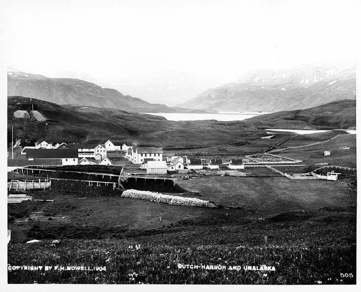
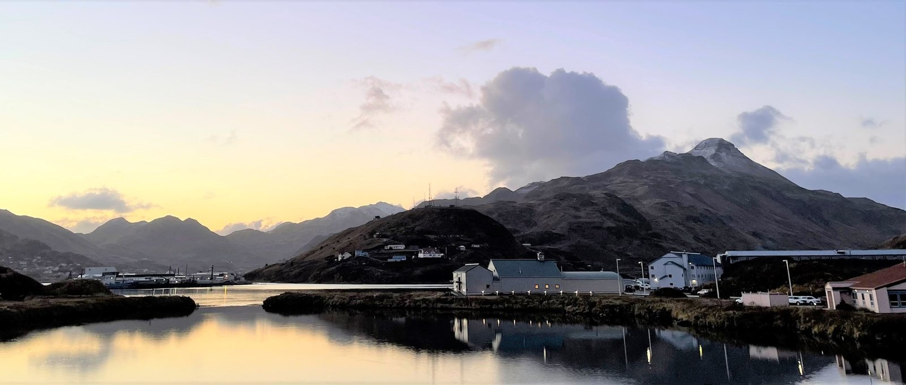

Directory / Unalaska, AK
Unalaska tides
High and low tides for the coming week from NOAA station 9462620 (53.879196, -166.5403). Times are local (LST/LDT). Heights are feet above Mean Lower Low Water (MLLW).
Harbor then & now
Historic

Current

Official NOAA predictions Station home NOAA chart viewer Printable tide calendar View on Windy
Port Sponsor — Unalaska, AK
Top placement for fuel docks, marinas, yards, and marine businesses.
$25–$50 / month
Friday, November 20, 2026
| Tide | Time (local) | Height (MLLW) |
|---|---|---|
| High | 2:08 AM | 2.3 ft |
| Low | 6:35 AM | 1.8 ft |
| High | 1:20 PM | 3.6 ft |
| Low | 8:48 PM | 0.6 ft |
Saturday, November 21, 2026
| Tide | Time (local) | Height (MLLW) |
|---|---|---|
| High | 3:43 AM | 2.4 ft |
| Low | 6:46 AM | 2.3 ft |
| High | 1:29 PM | 3.8 ft |
| Low | 9:24 PM | 0.0 ft |
Sunday, November 22, 2026
| Tide | Time (local) | Height (MLLW) |
|---|---|---|
| High | 1:49 PM | 4.1 ft |
| Low | 10:06 PM | -0.5 ft |
Monday, November 23, 2026
| Tide | Time (local) | Height (MLLW) |
|---|---|---|
| High | 2:20 PM | 4.3 ft |
| Low | 10:55 PM | -0.9 ft |
Tuesday, November 24, 2026
| Tide | Time (local) | Height (MLLW) |
|---|---|---|
| High | 3:02 PM | 4.5 ft |
| Low | 11:48 PM | -1.1 ft |
Wednesday, November 25, 2026
| Tide | Time (local) | Height (MLLW) |
|---|---|---|
| High | 3:57 PM | 4.6 ft |
Thursday, November 26, 2026
| Tide | Time (local) | Height (MLLW) |
|---|---|---|
| Low | 12:44 AM | -1.3 ft |
| High | 9:31 AM | 4.1 ft |
| Low | 12:29 PM | 3.9 ft |
| High | 5:09 PM | 4.5 ft |
Friday, November 27, 2026
| Tide | Time (local) | Height (MLLW) |
|---|---|---|
| Low | 1:40 AM | -1.3 ft |
| High | 10:02 AM | 4.2 ft |
| Low | 2:06 PM | 3.7 ft |
| High | 6:26 PM | 4.3 ft |
Marine weather & cameras
NWS marine forecast — Unalaska Bay (PKZ771)
Issued 314 PM AKST Thu Nov 19 2026. Snapshot fetched 2026-11-19 21:28 AKST from NWS text product. Official zone forecast · Raw text
...SMALL CRAFT ADVISORY TONIGHT...
- .TONIGHT...W wind 30 kt becoming SW 15 kt after midnight. Seas 7 ft subsiding to 4 ft after midnight.
- .FRI...S wind 20 kt. Seas 3 ft. Rain.
- .FRI NIGHT...W wind 20 kt becoming S 10 kt after midnight. Seas 3 ft.
- .SAT...SE wind 30 kt. Seas 5 ft.
- .SAT NIGHT...SW wind 30 kt. Seas 5 ft.
- .SUN THROUGH MON...W wind 25 kt. Seas 4 ft.
- .TUE...NW wind 25 kt. Seas 10 ft.
Nearby NDBC observation — Dutch Harbor Pilot Station (DPXA2)
wind 240°, 9 kt, gust 22 kt, air 37°F, 1008.5 hPa
Observation time 2026-11-19 21:02 AKST (converted to AKST). Attribution: NOAA NDBC station DPXA2. Snapshot fetched 2026-11-19 21:28 AKST.
Harbor webcams
- FAA WeatherCams — Dutch Harbor / Unalaska Airport (PADU) (free public link; not embedded)
- FAA WeatherCams — Unalaska camera site summary
No free city/harbor webcam verified beyond FAA WeatherCams. We link only; we do not rehost images.
Local marine & shore directory
Verified public listings only. List free · Get featured
Marine services
Moorage & marinas
Fuel docks
Shipyards & haul-outs
No verified listing yet — list your business free.
Boat repair & mechanics
Marine suppliers & chandleries
Electronics sales & installation
No verified listing yet — list your business free.
Welding & fabrication
Canvas & upholstery
No verified listing yet — list your business free.
Surveyors
No verified listing yet — list your business free.
Towing & salvage
Ice & bait
No verified listing yet — list your business free.
Fishing charters
Ashore for boaters
Groceries & provisioning
Hardware
Liquor stores
Laundromats
No verified listing yet — list your business free.
Showers
Lodging
Restaurants
Medical clinics
Pharmacies
No verified listing yet — list your business free.
Post office & shipping
Airport & floatplane
Propane
No verified listing yet — list your business free.
Auto & truck rental
Verified public listings only. Repair, welding, diving, supply, charter, restaurant, rental, taxi, and air listings were added on 2026-11-14 from the City of Unalaska business directory; harbor, fuel, and clinic listings come from the City of Unalaska Ports & Harbors pages and each business’s own site. Basic listings are free; a Featured listing is $10/month or $100/year. For corrections or a free listing, contact J.L. Miller at pacifictides.ak@gmail.com (email only).
Local news — Unalaska, AK
Plain links to local outlets. Always check the source for the latest. Local news partners welcome.
Free weekly tides & marine weather
Get a short email for your port. We do not sell your email. Privacy.
Mailing list powered by Buttondown.
Boating gear on Amazon
As an Amazon Associate I earn from qualifying purchases.
Helpful search links for common gear. Prices and availability are on Amazon.
Other Alaska ports
Also see Dutch Harbor tides (NOAA 9462611).
- Skagway tides
- Juneau tides
- Sitka tides
- Wrangell tides
- Ketchikan tides
- Cordova tides
- Kenai tides
- Whittier tides
- Valdez tides
- Kodiak tides
- Petersburg tides
- Dutch Harbor tides
- Homer tides
- Yakutat tides
All Pacific Tides ports · Harbor, fuel & haul-out directory · Printable Unalaska tide calendar
Sources
- NOAA CO-OPS station 9462620 — Unalaska
- Predictions API:
api.tidesandcurrents.noaa.gov/api/prod/datagetter - Fetched 2026-11-06 06:08 UTC from NOAA CO-OPS datagetter (product=predictions, interval=hilo, datum=MLLW, time_zone=lst_ldt, units=english) for station 9462620, 2026-11-06 through 2026-11-13.
- NWS marine zone PKZ771 (Unalaska Bay) text product via tgftp.nws.noaa.gov — snapshot 2026-11-05 21:09 AKST; not for navigation; no NOAA/NWS endorsement.
- NDBC station DPXA2 (Dutch Harbor Pilot Station) realtime obs — snapshot 2026-11-05 21:09 AKST.
- FAA WeatherCams PADU / Unalaska — outbound links only.